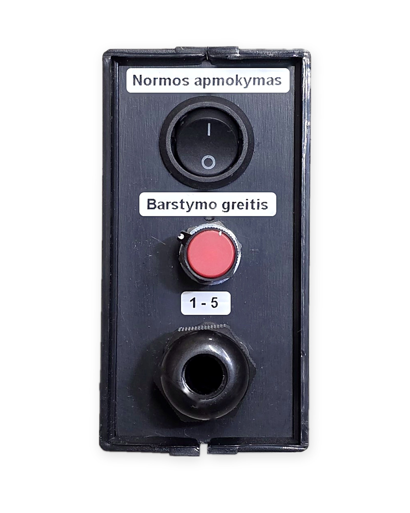
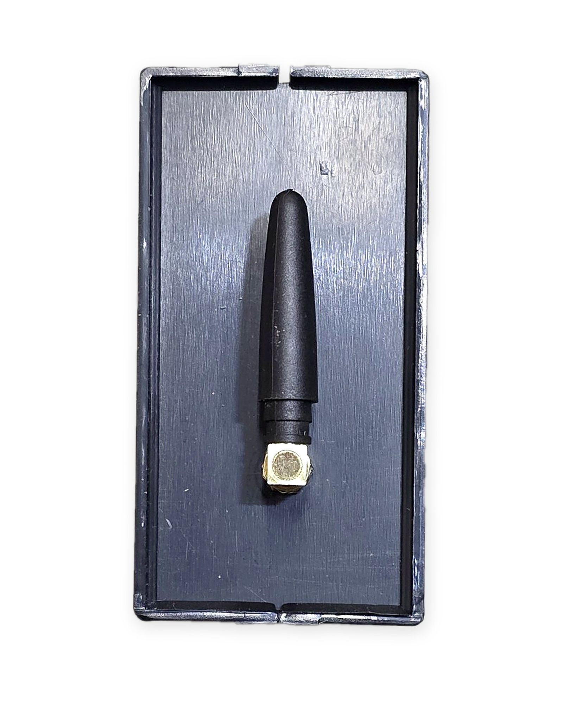
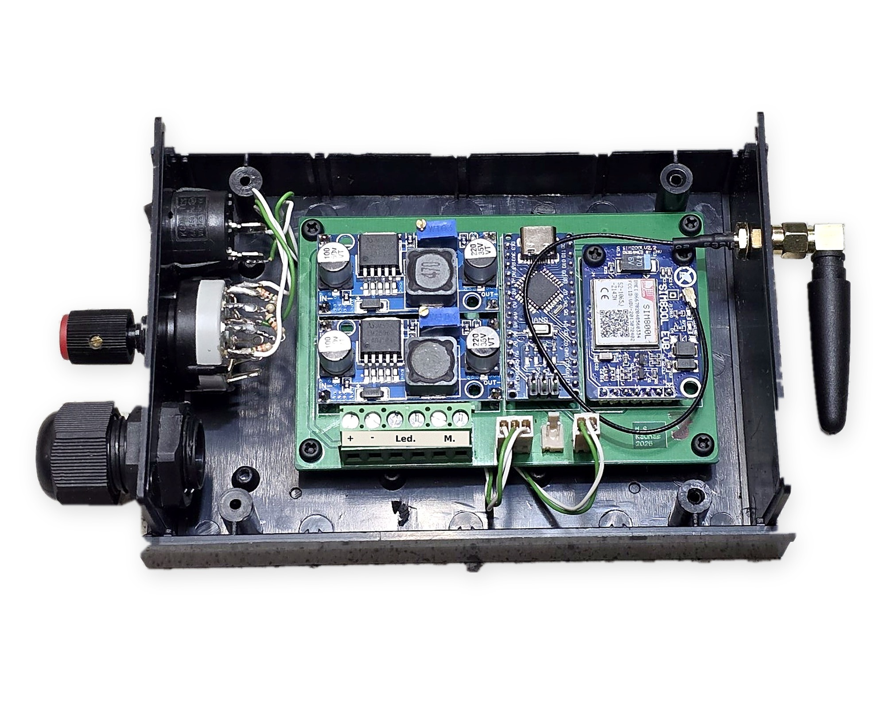
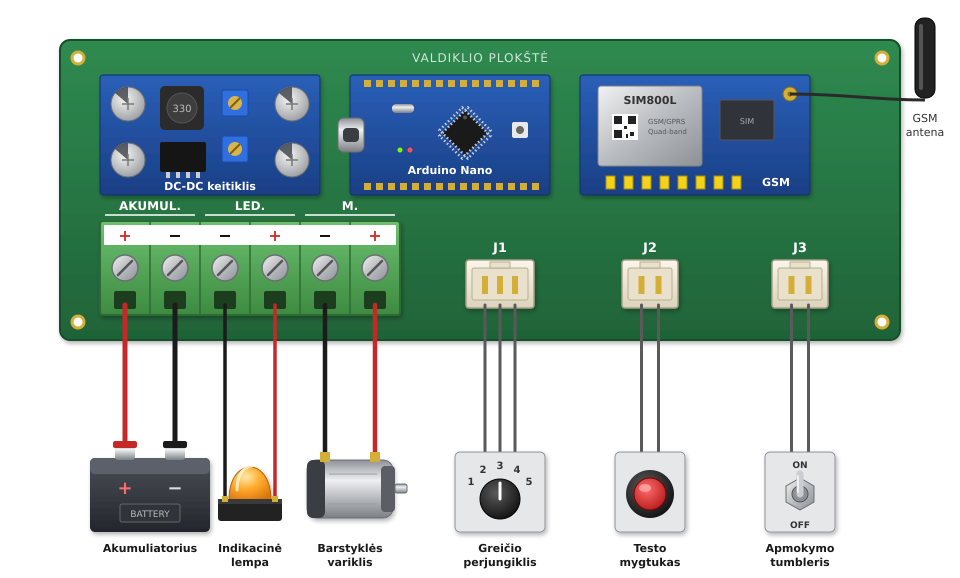

Valdiklis barsto pašarą SMS komanda arba mygtuku. Barstomas kiekis nustatomas vieną kartą kalibruojant (apmokymo tumbleriu), o vėliau galima barstyti pusę, pilną, pusantros ar dvigubą normą.



Priekinė panelė: apmokymo tumbleris („Normos apmokymas“), barstymo greičio perjungiklis (1–5) ir laidų įvadas. Galinė pusė: GSM antena. Vidus: žalias gnybtynas laidams ir baltos jungtys valdymo elementams (žr. 1 skyrių).

Žalias gnybtynas, gnybtai skaičiuojami iš kairės:
| Gnybtas | Ką jungti |
|---|---|
1 + |
Akumuliatoriaus pliusas (12 V) |
2 − |
Akumuliatoriaus minusas |
3 − |
Indikacinės lempos minusas |
4 + |
Indikacinės lempos pliusas |
5 − |
Variklio minusas |
6 + |
Variklio pliusas |
Baltos jungtys, iš kairės:
| Jungtis | Ką jungti |
|---|---|
| J1 (3 kontaktai) | Greičio perjungiklis |
| J2 | Testo mygtukas |
| J3 | Apmokymo tumbleris |
+ ir −.Jei variklis sukasi ne į tą pusę, sukeiskite vietomis abu
M. laidus.
Įjungus maitinimą valdiklis per ~1 min. prisijungia prie GSM tinklo. Jei telefonas jau užregistruotas, ateina SMS „Pasileido sms valdiklis“.
Jei SIM kortelės nėra, įjungtas PIN kodas ar GSM modulis neatsako, valdiklis po ~1 min. pats persikrauna ir bando iš naujo. Laikinas sutrikimas praeina savaime.
Įjunkite valdiklį ir palaukite ~1 min., kol prisijungs prie tinklo.
Iš savo telefono nusiųskite SMS:
Reg
Po ~10 s gausite patvirtinimo SMS, kad registracija pavyko. Jame pateikiamas ir visų SMS komandų sąrašas:
Registracija sekminga!
SMS komandos:
Reg
Restart
Info
Norma_05
Norma_1
Norma_15
Norma_2
Clear
Sekmingo naudojimo !Valdiklis vykdo komandas tik iš užregistruoto numerio. Kitų numerių SMS ignoruojamos ir neatsakomos.
Norite valdyti kitu telefonu? Nusiųskite Reg iš naujo
telefono: valdiklis persiregistruos ir toliau klausys tik jo.
Greitis nustatomas perjungikliu su 5 pozicijomis:
| Pozicija | Variklio greitis |
|---|---|
| 1 | 40 % |
| 2 | 50 % |
| 3 | 60 % |
| 4 | 80 % |
| 5 | 100 % |
Paleistas variklis sklandžiai įsibėgėja iki nustatyto greičio, o sustabdomas taip pat sklandžiai sulėtėja (~1 s).
Valdiklis barsto pagal laiką, o išbarstomas kiekis priklauso nuo greičio. Todėl:
Kalibracija nustato, kiek laiko barstyti pilną normą.
Norma_1).Laikas išsaugomas ir nedingsta išjungus maitinimą.
Tumbleris įjungtas trumpiau nei 4 s: variklis nepasileidžia, SMS neateina, o pilna norma nustatoma 20 s. Lempa užgęsta po 4 s. Norėdami tikslios normos, kalibruokite iš naujo.
| SMS | Kiek barstoma | Pvz., kai pilna norma 30 s |
|---|---|---|
Norma_05 |
pusė normos | 15 s |
Norma_1 |
pilna norma | 30 s |
Norma_15 |
pusantros normos | 45 s |
Norma_2 |
dviguba norma | 60 s |
Kaip vyksta barstymas:
Bat) ir ryšio stiprumu
(Sig).Paspaudus testo mygtuką išbarstoma pilna
norma, kaip su Norma_1. Pradžioje SMS neateina, o
baigus ateina „Pilna norma isbarstyta“.
Nuo užsidegusios lempos iki variklio sustojimo (taip pat kalibruojant tumbleriu):
Norma_*,
Info, Restart, Clear,
Reg) ir testo mygtukas ignoruojami:
nevykdomi ir neatsakomi;| SMS | Ką daro | Atsakymas |
|---|---|---|
Info |
Pasako akumuliatoriaus įtampą ir ryšio stiprumą | Info: / Bat: 12.650 V /
Sig: -71 dBm |
Restart |
Perkrauna valdiklį | „Restartuoja sms valdiklis ...“, po ~1 min. „Pasileido sms valdiklis“ |
Clear |
Ištrina užregistruotą numerį | „Numeris istrintas is atminties!“ Po to reikės vėl
Reg |
Bat ir Sig (orientacinės reikšmės)Bat (12 V švino akumuliatorius) |
Būklė |
|---|---|
| 12,6 V ir daugiau | Pilnas |
| ~12,2 V | Pusiau iškrautas |
| 11,8 V ir mažiau | Reikia krauti |
Sig |
Ryšys |
|---|---|
| nuo −51 iki −75 dBm | Geras |
| nuo −77 iki −93 dBm | Vidutinis |
| −95 dBm ir silpniau | Silpnas, SMS gali vėluoti |
Unknown |
Nėra tinklo |
Valdiklis kas 24 valandas pats persikrauna, kad GSM modulis neužstrigtų. Tai normalu.
Restarto metu gausite dvi SMS:
Jei restarto laikas sutampa su barstymu, valdiklis palaukia, kol barstymas baigsis. Tada SMS ateina tokia tvarka: „… isbarstyta“, „Restartuoja sms valdiklis ...“, „Pasileido sms valdiklis“.
24 valandos skaičiuojamos nuo paskutinio įjungimo, todėl restarto
laikas pasislenka, jei valdiklį išjungėte arba perkrovėte komanda
Restart.
Ramybės būsenoje valdiklis naudoja ~26–29 mA (~0,7 Ah per parą): GSM modulis miega ir pabunda tik gavęs SMS, procesorius laukimo metu taip pat miega.
Multimetru matuojama srovė nuolat šiek tiek kinta – tai normalu.
Info. Jei ir tada neatsako,
išjunkite ir vėl įjunkite maitinimą.